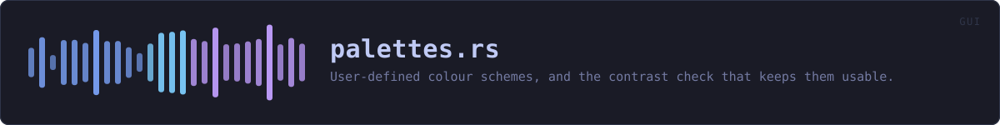

crates/veilvoice-gui/src/palettes.rs
veilvoice-gui · 700 lines · read the source here · or on GitHub
User-defined colour schemes, and the contrast check that keeps them usable.
A reader can drop a small text file into a palettes/ directory beside the preferences file and have it appear in the theme picker alongside the nine built-in schemes. The format is the same key = value shape crate::prefs already uses, for the same reason: it is trivial to write by hand, trivial to parse without a dependency, and has no syntax in which something surprising can hide.
A palette file is untrusted input
It arrives from the filesystem, it may have been written by hand at two in the morning, and it may have been copied from a web page by somebody who has never seen a hex colour. So it is parsed like anything else this project reads: every field validated, every failure named, and refused rather than patched up.
Refusing matters more here than it first appears. The obvious lenient design is to fill in whatever is missing from the default theme -- and that produces a palette which is mostly the user's, with a few colours from somewhere else, and no indication which. The user sees an application that looks subtly wrong and has nothing to go on. An error naming the missing token is worth more than a window that opens.
Contrast is computed, not trusted
The request that prompted this asked for "whatever colour with correct contrast to read". Correct contrast is not an aesthetic judgement, it is arithmetic: WCAG 2.1 defines relative luminance and a contrast ratio, and a ratio below 4.5 means body text a substantial number of people cannot read.
So a palette whose foreground fails against its own background is refused with the measured ratio in the message, rather than accepted and left to produce an application nobody can use. It is the one validation here that is about the user rather than about the parser, and it is the reason this module exists at all rather than the fields being read straight into a struct.
The thresholds are stated where they are enforced, and they are the standard's, not invented here:
| Pair | Minimum | Why | |---|---|---| | fg on bg | 4.5 | Body text, WCAG AA | | fg on bg_soft | 4.5 | The same text on a raised surface | | muted on bg | 3.0 | Secondary text, AA large-text threshold | | accent on bg | 3.0 | Links and controls, AA non-text contrast | | err on bg | 3.0 | A warning nobody can read is worse than none |
muted is deliberately held to 3.0 rather than 4.5. It is used for secondary text that is meant to recede, every built-in theme would fail at 4.5, and pretending otherwise would mean shipping a rule the project's own themes break.
In plain words
Lets you write your own colour scheme and have VeilVoice use it.
Drop a small text file in a folder and it appears in the list. Every colour has to be there, and the text has to be readable against the background: a scheme whose text fails that check is refused rather than applied, with the measured numbers so you know how far off it is and which way to move.
WHAT THIS FILE CONTAINS
700 lines defining 8 functions (4 public), 1 type and 4 constants. Everything below is read out of the source, so it cannot disagree with the code.
The types it owns.
struct Parsedline 156 — One parsed colour scheme, before it is accepted.
What happens when it runs. These are the ways in: public, and nothing else in this file calls them, so they are what an outside caller reaches first.
default_dirline 291 — Where palettes live, beside the preferences file.loadline 318 — Read every palette in dir, returning the usable ones and every complaint.
reachesbuild,contrast_problems,parse,contrast,parse_hex,luminance
WHAT CALLS WHAT
The functions this file defines, and the calls between them. An edge means the callee's name appears, called, inside the caller's body — a syntactic reading, not a type-resolved one.
The same graph as Mermaid source
%%{init: {"theme":"base","themeVariables":{"background":"#1a1b26","primaryColor":"#1f2335","primaryTextColor":"#c0caf5","primaryBorderColor":"#7aa2f7","secondaryColor":"#16161e","tertiaryColor":"#16161e","lineColor":"#737aa2","textColor":"#c0caf5","mainBkg":"#1f2335","nodeBorder":"#7aa2f7","clusterBkg":"#16161e","clusterBorder":"#2f3549","fontFamily":"ui-monospace, SFMono-Regular, Consolas, monospace","fontSize":"14px"}}}%%
flowchart TD
n_luminance["luminance<br/>line 94"]
n_contrast["contrast<br/>line 110"]
n_contrast_problems["contrast_problems<br/>line 130"]
n_parse_hex["parse_hex<br/>line 163"]
n_parse["parse<br/>line 180"]
n_build["build<br/>line 258"]
n_default_dir(["default_dir<br/>line 291"])
n_load(["load<br/>line 318"])
n_contrast --> n_luminance
n_contrast_problems --> n_contrast
n_load --> n_build
n_load --> n_contrast_problems
n_load --> n_parse
n_parse --> n_parse_hex
click n_luminance href "https://github.com/tilas01/veilvoice/blob/main/crates/veilvoice-gui/src/palettes.rs#L94" "open the source"
click n_contrast href "https://github.com/tilas01/veilvoice/blob/main/crates/veilvoice-gui/src/palettes.rs#L110" "open the source"
click n_contrast_problems href "https://github.com/tilas01/veilvoice/blob/main/crates/veilvoice-gui/src/palettes.rs#L130" "open the source"
click n_parse_hex href "https://github.com/tilas01/veilvoice/blob/main/crates/veilvoice-gui/src/palettes.rs#L163" "open the source"
click n_parse href "https://github.com/tilas01/veilvoice/blob/main/crates/veilvoice-gui/src/palettes.rs#L180" "open the source"
click n_build href "https://github.com/tilas01/veilvoice/blob/main/crates/veilvoice-gui/src/palettes.rs#L258" "open the source"
click n_default_dir href "https://github.com/tilas01/veilvoice/blob/main/crates/veilvoice-gui/src/palettes.rs#L291" "open the source"
click n_load href "https://github.com/tilas01/veilvoice/blob/main/crates/veilvoice-gui/src/palettes.rs#L318" "open the source"
classDef entry fill:#1f2335,stroke:#7aa2f7,color:#c0caf5
class n_default_dir,n_load entry
classDef api fill:#1f2335,stroke:#7dcfff,color:#c0caf5
class n_contrast,n_contrast_problems api
classDef helper fill:#1f2335,stroke:#bb9af7,color:#c0caf5
class n_luminance,n_parse_hex,n_parse,n_build helperThis site loads no third-party script, so it cannot run Mermaid; the diagram above is the same nodes and edges drawn by the generator instead. GitHub renders the source below directly.
ITEMS
| Item | Line | Documentation |
|---|---|---|
REQUIRED pub const | 73 | Every token a palette file has to define. |
MAX_PALETTES pub const | 84 | The most palette files that will be read from the directory. |
MAX_BYTES pub const | 87 | The largest palette file that will be read. |
luminance fn | 94 | Relative luminance, as defined by WCAG 2.1. |
contrast pub fn | 110 | The WCAG contrast ratio between two colours, from 1.0 to 21.0. |
PAIRS const | 117 | The contrast pairs a palette has to satisfy, with the reason for each. |
contrast_problems pub fn | 130 | Check a palette's contrast, returning one message per failing pair. |
Parsed struct | 156 | One parsed colour scheme, before it is accepted. |
parse_hex fn | 163 | |
parse fn | 180 | Parse a palette file's text. |
build fn | 258 | |
default_dir pub fn | 291 | Where palettes live, beside the preferences file. |
load pub fn | 318 | Read every palette in dir, returning the usable ones and every complaint. |